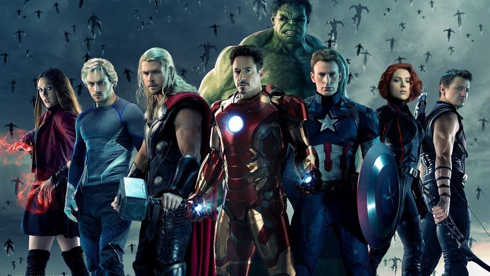

Algemeen nieuws
RUSSO'S NEMEN NA 'AVENGERS 4' PAUZE VAN MARVEL

Met Avengers 4 lijken de gebroeders Russo klaar te zijn met Marvel Studios. Althans, voorlopig. Tijdens een Q&A gisteren vertelden Anthony en Joe Russo dat het hierna tijd zou zijn voor iets nieuws. Het duo neemt even pauze van het superheldengenre en gaat vermoedelijk met iets kleinschaligers komen.
Tijdens de Q&A vertelden de broers dat Marvel hen enkel zou kunnen terughalen voor een Secret War-film. Dat is het eerste crossover-event van Marvel, dat in 1984 in de comics plaatsvond. Daarin teleporteerde de machtige Beyonder een aantal van de grootste helden en schurken van het Marvel Universe naar Battleworld, waar ze het tegen elkaar moesten opnemen om te bepalen of het goede of het kwade nou zou overheersen.
Keert dit prequelpersonage terug in STAR WARS : EPISODE 9

Regisseur J.J. Abrams heeft de eer om met Star Wars: Episode IX een einde te maken aan het verhaal van de Skywalkers. In het verleden beloofde hij al eens daaromtrent ook prequelelementen te zullen eren in zijn film. En nu krijgen we een gerucht dat hint naar die prequelelementen.
Mike Zeroh meldt dat Natalie Portman allicht terugkeert in haar rol als Padme Amidala. Ze zou een kleine cameo hebben in de Star Wars-film en geen sprekende rol hebben. In plaats daarvan is ze enkel te zien in een korte flashback en zijn er een paar shots van haar personage. Padme zou dan naast haar kleinzoon, Kylo Ren (Adam Driver) te zien zijn.
Doodsoorzaak Stan Lee bekend
Marvel-liefhebbers namen twee weken geleden afscheid van stripauteur Stan Lee. De Amerikaan, die al lange tijd met longontstekingen heeft geworsteld, overleed 12 november op 95-jarige leeftijd. Roddelwebsite TMZ is in het bezit gekomen van zijn overlijdensakte. Daarop staat aangegeven dat hij officieel is overleden aan hart- en ademhalingsproblemen. Het zou in de ochtend gebeurd zijn in het Cedars-Sinai Medical Center te Los Angeles. Lee had al aan het begin van 2018 onthuld dat hij met pneumonie worstelde. Volgens de doodsverklaring is aspiratiepneumonie één van de redenen dat de beste man is overleden. Er komen dan vaste of vloeistoffen in de luchtwegen terecht. TMZ heeft verder uit de documenten gehaald dat Lee gecremeerd is en dat zijn as nu in het bezit is van dochterlief Joan.
Lee (geboren Stanley Martin Lieber) kwam 28 december 1922 ter wereld. Aan het begin van de jaren 60 creëerde hij samen met Jack Kirby en Steve Ditko vele legendarische stripboekhelden. We hebben het onder andere over karakters als Spider-Man, Iron Man, Thor, de Fantastic Four en de X-Men. Inmiddels zijn er ook een hoop, succesvolle films over hen gemaakt. Dikwijls zagen fans de stripauteur voorbijkomen in een gastrolletje. Voor zijn dood heeft Stan Lee ook een cameo gefilmd voor de vierde Avengers-film. Deze komt volgend jaar in mei uit.
NIEUWE DINOSAURUS IS VERNOEMD NAAR MCU-SCHURK THANOS
In 1973 bedachten Jim Starlin en Mike Friedrich het personage Thanos. Hij verscheen voor het eerst in The Invincible Iron Man #55 en was sindsdien de focus van meerdere verschillende comics. De belangrijkste daarvan is natuurlijk de Infinity War en Infinity Gauntlet-reeks, waarin hij de Infinity Stones verzamelt en gebruikt om het halve universum te vernietigen. In Avengers: Infinity War werd Thanos gespeeld door Josh Brolin en kon hij die doelen ook daadwerkelijk realiseren. Maar wat vermoedelijk niemand verwacht had, is dat Thanos nu ook voortleeft als dinosaurus.
Recent ontdekten paleontologen een nieuw soort dinosaurus in Brazilië, die ongeveer 145 tot 79 miljoen jaar geleden leefde. Nu blijkt dat de dino een heel geinige naam heeft gekregen: Thanos simonattoi. Thanos verwijst uiteraard naar het Marvel-personage, waarvan de naam geïnspireerd werd op het Oudgriekse qwoord thanatos, wat dood betekent. Simonattoi verwijst naar de ontdekker van de dinosaurus, Sérgio Luis Simonatto. Vermoedelijk werd het beest tussen de 5,5 en 6,5 meter lang.
NETFLIX KOMT MET MOOIE STAN LEE EASTER EGG
Er is een geinige easter egg te vinden op Netflix. Wijlen Stan Lee wordt geëerd met een eigen functie. Als je nu zoekt op de term Excelsior, zo'n beetje de lijfspreuk van Lee, dan vind je al het werk dat gebaseerd is op de comics van Lee.
Excelsior is het woord waarmee Lee veel van zijn columns en interview afsloot. Het werd ook meteen een trending hashtag nadat Lee eerder deze maand overleed. Ook is het woord het motto van de stad New York en van heel wat superhelden. Zoeken op de term levert nu ook meteen een handig overzicht met alles van Marvel op.
Het is niet helemaal duidelijk hoe lang deze easter egg zal werken op Netflix. Sowieso is het de bedoeling dat bijna al het Marvel-materiaal van Netflix verdwijnt en terecht zal komen op Disney Plus, de nog te lanceren streamingdienst van Disney. Daarmee zullen in elk geval de MCU-producties van de dienst verdwijnen. Wat er staat te gebeuren met Netflix-series als Daredevil is nog niet duidelijk.
ZIJN DEZE ALIENS UIT HET 'STAR WARS'-CANON GESCHRAPT!?
Wie kent de Bothans niet? In Star Wars: Return of the Jedi werden de buitenaardse wezens genoemd als helden. "Many Bothans died to bring us this information", meldde Mon Mothma over de plannen van de tweede Death Star. Maar in het canon van de franchise is er vrijwel niets over bekend. Nu blijkt dat ze wellicht geschrapt worden.
Onlangs kwam het Star Wars Alien Archive uit, een boek waarin alle aliens voorkomen. Maar daarin werden Bothans niet genoemd. En dus vroeg een fan aan franchisebaas Matt Martin, die samen met een aantal anderen ervoor verantwoordelijk is het canon in de gaten te houden, waarom dat niet zo was. "Bothans moeten nog in het canon verschijnen. Misschien is het niet eens een soort!? " merkt Martin op Twitter op.